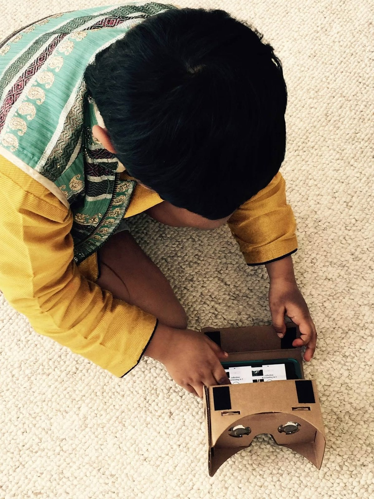

MeSA 2.0 · the story behind it
How I got here
The long way to a medication robot: a dining-room Lego city, a cardboard VR viewer, a Christmas Raspberry Pi, a robotic catheter, and a movie I watched twice.
When I was five, my younger brother was born. Our dining room was empty, so I had the space, and I spent that whole stretch building a city in it.
It started in the middle of the room, and I kept adding to it. I'd think about what a city needs — a school, a fire station, roads — and build that part next. I did this all day. It grew until it covered the room, and it stayed up for about a month. When we needed the room back, we didn't throw it out. We carried it upstairs in parts. I didn't want to take it apart.

Around the same time I made a Halloween card on Scratch, the one from MIT, and kept using it after that. So I was building with Lego and messing around with code in the same year.
For a long time it was mostly Lego. We went to LEGOLAND when I was five or six. By around seven I'd stopped following the instructions and started making my own things instead.


In 2017 my mom came home from a seminar at Google with a cardboard VR viewer they'd handed out, the lens-free kind. You folded it, put a phone inside, and looked through it. I still remember how different that felt from building something that just sat there.

In 2019 my mom gave me a Raspberry Pi kit for Christmas, a Piper. It was a build-it-yourself computer with a wooden case, and all the insides came as separate parts: the board, the chips, the wires, a small screen. You had to put the whole thing together and wire it up yourself. I spent the entire day on it, from opening the box to connecting the last wire, and that night I could play Minecraft on the little monitor I'd just built. That was my first Raspberry Pi.


In 2022 I wanted to build something of my own with a Pi, not just play on one. I had an idea to build a robotic catheter. It was ambitious, and I didn't really know how, but I wanted to make something that would actually help people, not just something fun. I asked around, and a family friend who turned out to be a robotics PhD pointed me to a Raspberry Pi, a CanaKit, and some parts. With his help I wrote a small Python program, and it moved. Only a few directions, nothing fancy. But I had made something physical move by writing code, and that stayed with me. I'm using the same Pi and kit for MeSA now.
Later I watched A Man Called Otto. One of the characters, the neighbor Reuben, has dementia. It moved me enough that I watched the whole film again. I didn't come away with a plan, just a feeling that something could be done. I kept wondering how someone elderly, living alone, remembers to take their medicine on time, and the right one, and what happens if they don't.
I keep a journal of things I'd like to build. I wrote this one down, and it stayed near the top until I was ready to start.
That turned into MeSA.